Overview › Architecture
Architecture
Fourteen bounded domains, each with one documented authority, one narrative verb or infrastructure preposition, and an explicit list of decisions it is forbidden to make.
This page is a digest. The canonical text is
docs/design/02-constitution.md (naming constitution and the
45 invariants) and docs/design/04-architecture.md (system
context, planes, control hierarchy) in
the repository.
Actors have verbs. Infrastructure has prepositions.
The locked convention distinguishes agents from infrastructure. People and entities represent agents: they observe, plan, commission, act, design, conform, compile, test, judge, embody, destroy, or reveal. Places, systems and phenomena represent infrastructure: they are the contexts under, in, or from which agents operate.
“Infrastructure” does not mean passive. It means the component provides a neutral capability rather than exercising a preference about what ought to happen.
| Domain | Grammatical use | Neutral service | Must not own |
|---|---|---|---|
| Leyline | under / through Leyline | Contracts, schemas, grammar profiles, versions, invariants, policy record formats, and the deterministic request resolver | Case-specific decisions or subsystem policy |
| Tolaria | trained / executed / tested in Tolaria | Host training, data and optimiser execution, devices, snapshots, replay, branching and rollback | Preferences, utility weights or verdicts |
| Sarpadia | recorded in / retrieved from Sarpadia | History, lineage, bootstrap ancestry, counterfactual outcomes, retrieval and datasets | Live-host mutation or self-approval |
| Agent | Verb | Architectural authority | Must not become |
|---|---|---|---|
| Tamiyo | Plans | Strategic allocation, regional permissions, long-horizon budgets and risk | A local action selector |
| Narset | Commissions and acts | Tactical intervention timing, insertion-region choice, operational constraints, pre-commit lifecycle control | A co-designer or source of unallocated authority |
| Nissa | Observes and reports | Typed host diagnostics, direct evidence publication, and provenance | A hidden controller or editorial intermediary |
| Momir | Designs | Candidate topology, parameters, mutation and recombination | The approver of its own work |
| Elesh | Conforms | Structural legality, canonicalisation and semantic identity | A utility predictor or task judge |
| Tezzeret | Compiles | Lowering and executable realisation | A semantic graph designer |
| Urabrask | Tests | Dynamic QA, regression, runtime conformance and evidence certification | The admission judge |
| Augustin | Judges | Admission, no-op comparison, policy utility and continued-tenancy rulings | A test runner or compiler |
| Kasmina | Embodies | Host topology, slots, maturation, blending and physical lifecycle | A candidate selector or blueprint catalogue |
| Emrakul | Destroys | Safe post-commit sedation, decay, consolidation and lysis | A constructor or newborn judge |
| Oona | Reveals | Flight recording, projections, operator surfaces and audit | A control-plane backchannel |
Nissa observes and reports. Tamiyo plans. Narset commissions and acts. Momir designs. Elesh conforms. Tezzeret compiles. Urabrask tests the compiled result in Tolaria. Augustin judges the resulting evidence under Leyline. Kasmina embodies the admitted growth. Emrakul destroys what no longer earns continued tenancy. Sarpadia retains every precedent. Oona reveals the account.
The canonical sentence — a compact authority map.docs/design/02-constitution.md§5.3
Architectural planes
| Plane | Domains | Purpose |
|---|---|---|
| Constitutional infrastructure | Leyline | Contracts, grammar profiles, compatibility, policy records, invariants |
| Training and execution | Tolaria | Trains the live host; executes deterministic ordinary, replay and branch worlds |
| Historical infrastructure | Sarpadia | Lineages, reference ancestry, outcomes, failures and split-safe datasets |
| Strategic agency | Tamiyo | Allocates regional resources, permissions and risk over long horizons |
| Tactical commissioning | Narset | Decides whether and where to commission growth; manages pre-commit actions |
| Observation | Nissa | Publishes what the host is doing without prescribing what should be built |
| Synthesis | Momir, Elesh, Tezzeret | Designs, canonicalises and compiles growth |
| Assurance and adjudication | Urabrask, Augustin | Establishes empirical evidence, then judges it independently |
| Embodiment and maintenance | Kasmina, Emrakul | Introduces growth safely; removes obsolete committed structure |
| Witness | Oona | Exposes an auditable account without steering it |
The newsroom principle
The resemblance to a newsroom is structural rather than decorative. A newsroom separates source observation, assignment, authorship, standards review, production, fact-checking, publication judgement, correction, archive and presentation because allowing one desk to control the complete chain corrupts both evidence and accountability.
| Domain | Newsroom desk |
|---|---|
| Nissa | Reporting, photography and data — publishes what was observed |
| Tamiyo | Editor-in-chief — allocates desks, time and strategic resources |
| Narset | Assignments editor — is there a story, which beat, what scope and deadline |
| Momir | Writer — determines the substantive answer from evidence and commission |
| Elesh | Copy and standards desk — house form, without deciding whether the story is valuable |
| Tezzeret | Production — turns canonical copy into an executable edition without changing meaning |
| Urabrask | Fact-checking and QA — establishes what the finished artefact actually does |
| Augustin | Publishing editor — run, return, defer, or spike |
| Kasmina | Integrates accepted material into the live edition |
| Emrakul | Correction, withdrawal and retirement after publication |
| Sarpadia | Morgue and archive — including corrections, failed investigations, abandoned drafts |
| Oona | Presentation — front page, dashboards, the public account |
| Leyline | Stylebook, editorial constitution and record format |
| Tolaria | Production environment, CMS, presses and test editions |
Narset does not send the photograph. Nissa sends the photograph directly to Momir. Narset sends only the assignment brief.
That rule turns into a concrete code-review question: does this field belong in an assignment brief, or does it impose an editorial angle? Scope, region, resource class, deadline, maturity mode and assurance class are assignment fields. A deficit diagnosis, topology preference, ancestor choice, expected mechanism or proposed solution is an editorial angle, and is schema-invalid in Narset's channel.
The metaphor is never the enforcement mechanism. Enforcement is contractual:
direct evidence publication, a narrow GrowthIntent,
deterministic request resolution, immutable provenance, and tests that
reject diagnostic or structural hints in Narset's channel.
The loops
Observation and commissioning


GrowthIntent never carries a copy of
telemetry.
Assurance and adjudication


Control hierarchy
Tamiyo
└── establishes StrategicEnvelope
└── Narset chooses local actions
├── WAIT
├── COMMISSION_GROWTH → GrowthIntent
├── BEGIN_MATURATION
├── REQUEST_QA
├── REQUEST_ADJUDICATION
├── BEGIN_BLEND
├── HOLD
├── ABORT
└── COMMIT
After COMMIT:
Narset relinquishes ordinary ownership
└── Emrakul manages physical maintenance
├── REQUEST_REVIEW
├── HOLD
├── SEDATE
├── DECAY
└── LYSEThe sentence test
Because each domain owns a verb, the narrative grammar doubles as a cheap architecture lint. A sentence that sounds wrong usually describes a real responsibility leak.
Healthy
Nissa published the same TelemetryEnvelope
to Narset and Momir.
Narset issued a GrowthIntent for Region A
under Tamiyo's envelope.
Urabrask requested a deterministic trial
in Tolaria.
Augustin selected no-op from the certified
evidence.
Kasmina rejected a lifecycle command whose
Augustin warrant was invalid.
Oona displayed the rejection without
altering the run.Triggers review
Narset forwarded a captioned telemetry
summary to Momir.
Narset requested an attention-like topology.
Nissa recommended a wide bottleneck.
Tolaria rejected the candidate.
Urabrask issued the admission token.
Augustin reran the branch with a more
favourable batch.
Tezzeret inserted a new semantic node
during optimisation.
Oona changed the learning rate directly.
The full catalogue of smells — observation to likely cause — is in
docs/design/03-principles.md, Appendix A. The sentence test
is not a proof; it is an intentionally cheap first filter, backed by Leyline
contracts and authority tests that do the real enforcement.
Dependency direction
The naming grammar implies two rules. Agents may consume neutral services from Leyline, Tolaria and Sarpadia through typed interfaces. Infrastructure must not import agent policy or encode agent-specific preferences.
| From | To | Verdict |
|---|---|---|
| urabrask | tolaria protocol | Healthy |
| augustin | leyline contracts | Healthy |
| momir | sarpadia retrieval API | Healthy |
| nissa | leyline telemetry schema | Healthy |
| narset | leyline GrowthIntent schema | Healthy |
| tolaria | augustin policy | Suspect |
| sarpadia | momir training code | Suspect |
| leyline | narset implementation | Prohibited |
| narset | momir graph grammar implementation | Prohibited |
| momir | narset hidden state | Prohibited |
Namespec 1.0 is locked. Changing a codename or moving an authority between names requires an architecture decision record, because it changes package paths, telemetry names, tests, and the shared responsibility grammar.